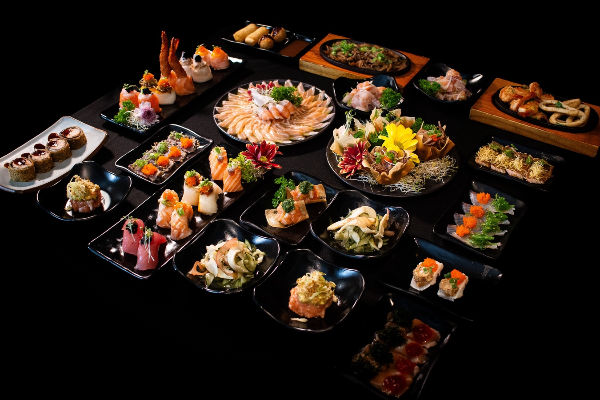
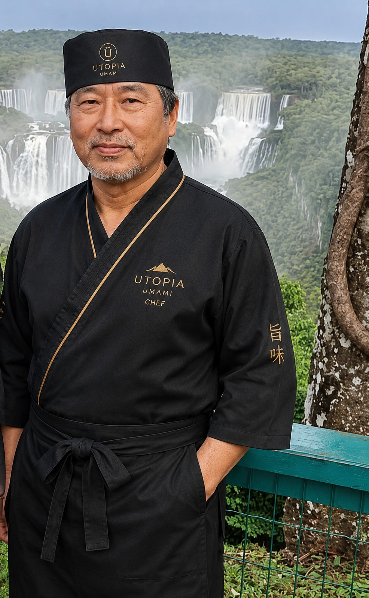

Em 1968, Yaoto Jorge Ozaki um ex samurai cansado de suas batalhas
chegou ao Brasil trazendo
consigo a
tradição e os
valores da cultura oriental. Apaixonou-se pela culinária
japonesa e tornou-se
um renomado
sushiman.
Inspirado por sua trajetória, criou o Utopia Umami, um
restaurante que une gastronomia, cultura
e
tradição oriental
em uma experiência única.
